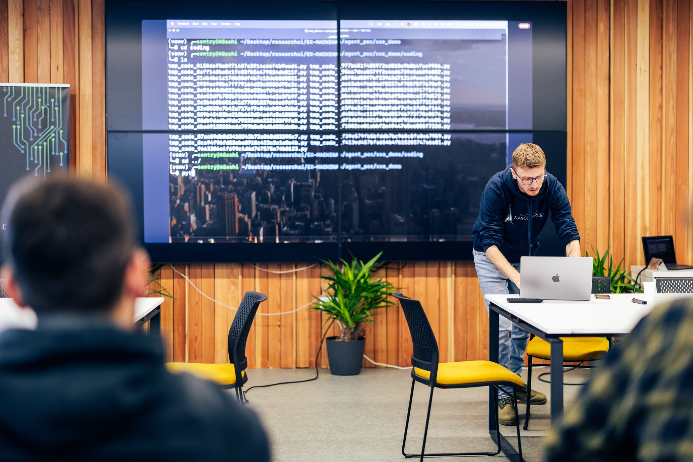

The first event in the region teaching offensive use of frontier LLMs · organizer & workshop lead
EX MACHINA is an event I founded and organized to introduce students and practitioners to a fast-moving and underexplored area: building agents on top of frontier LLMs for offensive security. The program walked attendees through real engagement workflows backed by working tooling, and then sent them off to build their own.
The event drew 100+ attendees and combined a hands-on workshop with a 24-hour CTF where teams built agents for offensive security from scratch.
The hands-on workshop, which I led personally, covered:
After the workshop, attendees had 24 hours to build and submit agents that solved offensive security challenges on their own. Hard requirement: agents had to be fully autonomous, no human-in-the-loop nudging, no prompt-by-prompt steering. Submit the agent, step back, and let it work.
Most teams built on top of AutoGen, particularly for its Docker-backed code execution feature, which let agents write, run, and iterate on real code inside an isolated container during the run.
Targeted at university students, early-career security practitioners, and professionals from neighbouring disciplines who wanted concrete exposure to where this tooling actually performs, and where it still doesn’t.

Interested in running a similar workshop for your team, university, or community? armendgashx@protonmail.com.